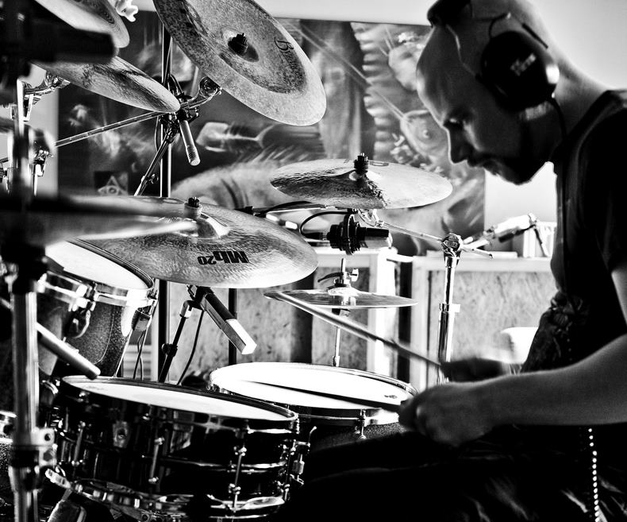
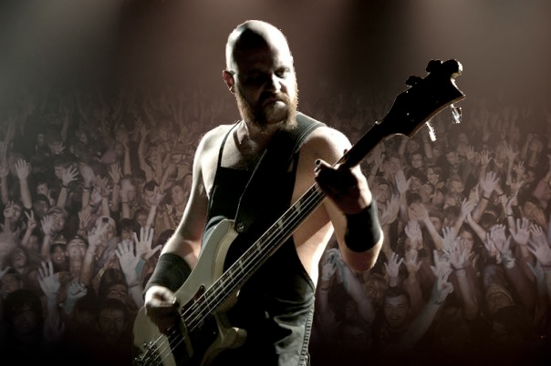
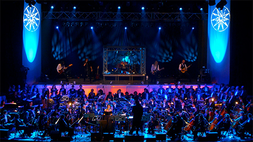

Petter Karlsson
I dagsläget ligger allt mitt fokus på att bli så bra som möjligt på webbutveckling!
Jag pluggar andra året på Changemaker Education
som Frontend
App
Developer.
Jag har även en gedigen erfarenhet från olika branscher och
yrkesroller.
En del av vad jag hunnit med de senaste åren är
Frontend/backend-webbutvecklare, webmaster, webbdesigner, layoutare, lärare i programmering
vid KOMVUX, musiklärare, musiker/producent, ljudtekniker, ljudmixare,
regisserat och redigerat musikvideor, verksamhetschef för reception- och Konferensavdelningen på
Fryshuset.
Ladda ner mitt CV som pdf
Projekt
Mortal Space Combat
Ett klassiskt arkadspel som jag gjorde som skolprojekt 2021. Det är ett multiplayer-spel där man är två
spelare på samma tangentbord.
Testa det! Det är faktiskt
riktigt kul,
speciellt om du har ljudet uppskruvat!
Ett mycket bra alternativ till "sten, sax, påse"! 👍
Endast för desktop
App för bokning/avtal/offert
Pågående fullstack-projekt med en app för företag som debiterar per timme.
Appen hjälper dig att synka dina bokningar så du lätt skall kunna skriva ut offerter, avtal och fakturor
baserat på timpris, extra tillägg, moms, RUT m.m.
Du får en full översikt över dina bokningar och intäkter etc. Lämpar sig även för den som bedriver
uthyrning av lokaler, gym, konferenser o.dyl.
En betaversion kommer att finnas tillgänglig efter årsskiftet.
AccessGuard
Webbapp skräddarsydd för att användas av Receptionen på Fryshuset. Systemet registrerar och loggar av- och påsättning av inbrottslarm samt utlåning av nycklar/passerkort.
Order-Maestro
Ett webbaserat offert- och ordersystem som användes under flera år av
konferensavdelningen på Fryshuset. Lokalbokningar, ordrar och offerter skapades och länkades med
kundprofiler.
Administratörerna kunde sedan skriva ut och mejla offerter och
avtal direkt till kund. Alla intäkter kunde sedan enkelt filtreras och sorteras efter
verksamhet, kund, månad och olika lokaler.
Musik
Jag
har spelat och sjungit i princip så länge jag kan minnas.
När jag var 10 år fick jag mina första trummor och startade mitt första band. Några år senare hade jag
både lärt mig sjunga och spela flera instrument. Idag ser jag mig själv som multimusiker.
I samma veva började jag lära mig spela in musik på en
4-kanalig portastudio. Där efter blev även inspelningsteknik och ljudmixning ett nytt passionerat område
för mig. Jag började sriva egna låtar och texter, och med åren har jag komponerat både till egna projekt
och andra artister.

Jag har spelat på, sjungit, producerat och mixat ett 20-tal CD/DVD/LP-skivor,
turnerat och gjort flera hundra spelningar i hela världen. Som musikproducent och ljudtekniker har jag
en mycket gedigen erfarenhet av ljudredigering, ljudsampling och midiprogrammering i Pro Tools, Logic
och liknande program.
Jag har även producerat och redigerat musikvideor och har vana att använda FinalCut, imovie, Adobe
Premier och After Effects.
Discografi (urval)


Live

Under mina år som musiker har jag med bl.a. Therion gjort flera stora turnéer.
Ett mycket lärorikt jobb som gjort att jag fått se nästan hela världen och lärt mig jobba under ibland
extrema omständighter.
Här är några av de länder jag turnérat i.
Argentina, Österrike, Belgien, Bolivia, Brasilien, Guatemala, Kanada, Chile, Colombia, Costa Rica, Kroatien, Tjeckien, Danmark, Ecuador, El Salvador, England, Finland, Frankrike, Tyskland, Grekland, Holland, Ungern, Italien, Irland, Israel, Japan, Mexiko, Norge, Polen, Rumänien, Ryssland, Serbien, Slovenien, Spanien, Sverige, Schweiz, Turkiet, Ukraina och USA.
Om mig

Petter Karlsson heter jag, och jag pluggar till Frontend
App
Developer på Changemaker Education i
Stockholm, och blir färdig
vårterminen 2023.
Med mitt företag PKM (Petter Karlsson - Multimedia) har jag genom åren jobbat med mängder av olika
projekt.
Men jag jobbade som webbutvecklare redan i början av 00-talet och gjorde många webbsidor åt små företag
och
privatpersoner, samtidigt som jag undervisade vid KOMVUX i programmering och webbproduktion.
Vid sidan av detta har jag även varit musiklärare, musiker/producent, involverad ett 30-tal skivinspelningar och gjort hundratals spelningar över hela världen, regiserat och redigerat musikvideor m.m.
I mitt arbetsliv har jag jobbat intensivt och nära mina medarbetare i väldigt många olika
arbetssituationer.
Därför har jag ett god erfarenhet av lagarbete och vilka för och ev. nackdelar detta har. Jag och har
med
tiden utvecklat ett gott sinne för sociala sammanhang och konflikthantering. Att försöka sprida positiv
energi är något jag jobbar med dagligen.
Jag är dessutom van att jobba självständigt, och trivs kanske allra bäst med att leda och ta ansvar för
mina egna projekt. Jag är en kreatör i själen, älskar problemlösning, ger nästan aldrig upp och är lagd
åt det perfektionistiska hållet.
Rak och tydlig kommunikation är också en ledstjärna för mig och jag är mycket van att göra detta även på
engelska.
2011 blev jag verksamhetschef på Fryshuset i Stockolm för konferens-, serviceavdelning och reception. Där fick jag goda erfarenheter av att ha personal och budgetansvar i flera år. Jag var även ansvarig för inköp och avtal kopplat till serviceavdelningen.
2018-2021 provade jag en ny tjänst som Fastighetssamordnare. I rollen ansvarade jag för att driva,
koordinera och utveckla systemförvaltningen. Webbadministratör för fastighets intern-webb.
Ansvarig för Fastighets digitaliseringsprocess och huvudadministratör för fastighetssystemet (DeDu) och
dess
databas.
I rollen ingick även att koordinera olika projekt, som ombyggnationer, och även vara mentor och stöd
till
andra verksamheter.
Skötte kontakt med kunder, uppdragsgivare och övriga funktioner inom Fryshuset.